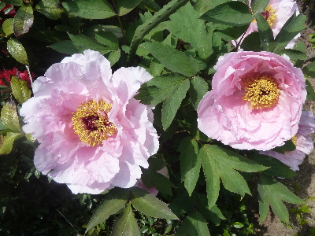
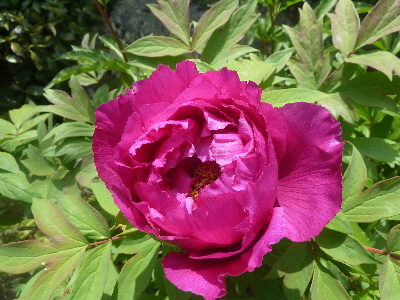
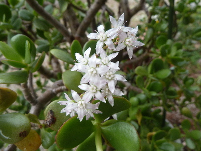
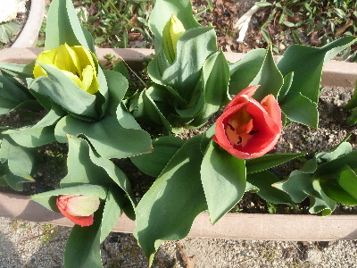
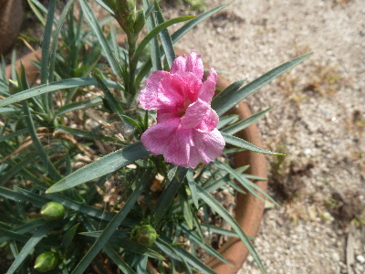

ボタンもシャクヤクの咲きました。
2018/04/14
綺麗に咲いていますが、なかなか見れないです。

お客さんに見てもらえるといいんですが、そう都合よく見てもらえないですよね。

花の時期は今だけです。
せっかく咲いているので、ちゃんと鑑賞しようと思いました。
2018/04/14
綺麗に咲いていますが、なかなか見れないです。

お客さんに見てもらえるといいんですが、そう都合よく見てもらえないですよね。

花の時期は今だけです。
せっかく咲いているので、ちゃんと鑑賞しようと思いました。
2018/04/07
毎年花が咲いているんですが、今頃が開花時期だったかな？
小さいのであんまり印象に残らないみたい。

ネットで検索したら、花の時季は11月から2月とありました。
そういえばお正月くらいに咲いてる気がする。
今年は花の時期が長かったのかな。
2018/04/01
チューリップって目立たない花な気がする。

今の時期だと桜や桃とかの木の花のほうが派手で目立ってる。
大量に植えるといいんでしょうね。
2018/04/01
やっと咲きました。

ちょっと形が悪いですね。
つぼみもいっぱいあるので、これからしばらく花がたのしめそうです。
過去の日記
畑仕事じゃないよ。